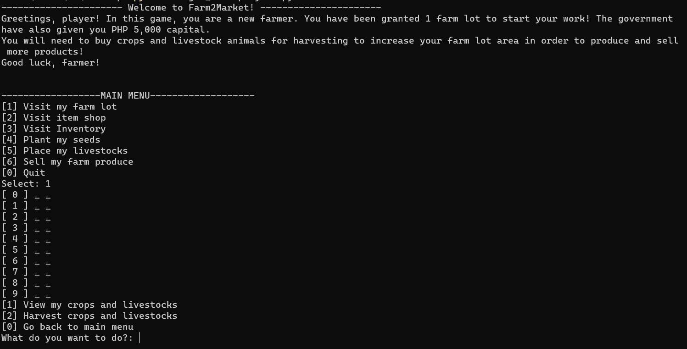
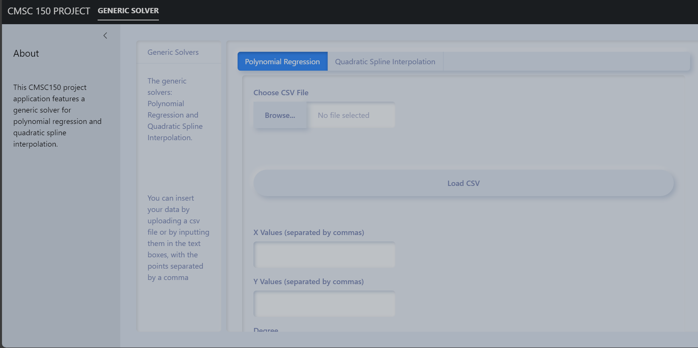
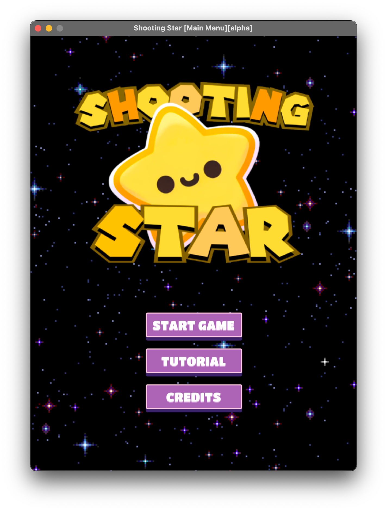

PREVIOUS PROJECTS
CMSC 12 Farming Simulation
CMSC 150 Problem Solver
CMSC 22 Shooting Star Arcade Game
SKILLS
Communication
Problem Solving
Teamwork
Critical Thinking
Adaptability
AUTOBIOGRAPHY
I'm John Russel T. Ilagan, 19 years old, born on the 19th of March, 2004 in Cavite. I have always been fond of computers and gadgets since I was a kid, and that fondness made me realize my desire to study the creation and operation of computers. I have always dreamt of contributing to future technological innovations and advancements, and that's why I chose the BS Computer Science degree program. I am currently a second-year Computer Science student at the University of the Philippines Los Baños (UPLB).